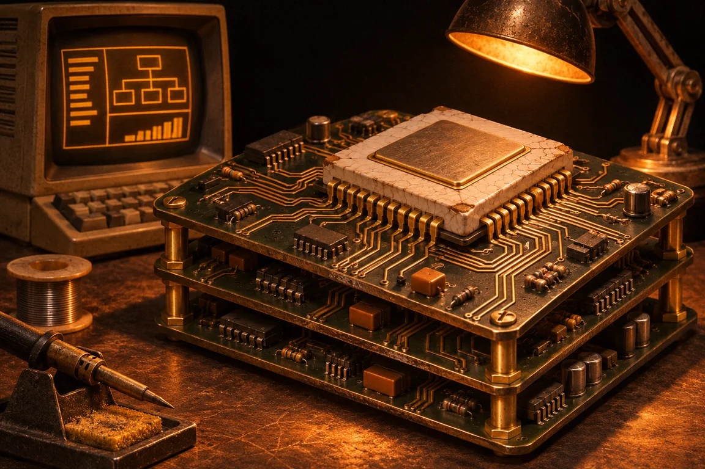

Principal Engineer at Fanatics Betting and Gaming.
DH/OS
david@workbench
Head of Technology · Sep 2021 – Jun 2023
Black Cow
I designed the rules engine and wallet integrations for
FreeBets, then led our teams through certification.
Operators could launch a promotion in
under 30 minutes. It used to take days.
I owned technology strategy for a modular iGaming platform
serving tier-one operators in regulated markets. I
reported to the board and stayed hands-on in the code.

Platform architecture / illustration
Bet volume
Millions per day
Engine latency
<100 ms
Team growth
2 → 20 engineers
60% less onboarding effort
I built a plug-and-play operator API and standardised the
integration process, cutting the engineering effort needed
to onboard an operator by 60%.
Millions of bets per day
I built a stateless random number generation engine that
handled millions of bets per day with response times under
100 ms. I also built an event-driven multiplayer game
server for real-time social play.
Reusable jackpot services
I designed a progressive-jackpot service that could
support multiple games and delivered bespoke jackpot games
adopted by tier-one brands.
2 to 20 engineers
I grew engineering from 2 to 20 people and led the
cross-functional organisation, with responsibility for
hiring, architecture and quality. I coached engineers in
system design, test-driven development and technical
leadership.
50% more requests per second
Earlier, as a developer at Black Cow, I improved the core
remote gaming server’s throughput by 50% on comparable
hardware. That gave operators more capacity from the same
class of machine.
Current role / Principal Engineer
Fanatics Betting and Gaming
I build scalable game servers for single-player and
multiplayer casino games. My work includes integrating AI
into the game technology and engineering the promotions
platform that powers FanCash Spins.
The two systems solve different problems. A single-player
game server handles one player’s session. A multiplayer
server has to keep players in sync as events arrive. The
promotions platform has to deliver the same offer
consistently as more people take part.
I built this portfolio around a workbench you can explore.
Scrolling moves you through the glass of a CRT and into a
terminal holding my work. Tune the oscilloscope and you
might find my jellyfish.
I’m a Principal Engineer at Fanatics Betting and Gaming. As
Head of Technology at Black Cow, I grew engineering from 2
to 20 people and built a game engine that handled millions
of bets per day with response times under 100 ms. My
background spans distributed systems, platform architecture
and technical leadership in regulated gaming.
I’m interested in bringing my distributed systems experience
to AI infrastructure and model serving, where latency,
reliability and cost all shape the product.
Current
Principal Engineer · Fanatics Betting and Gaming
Sep 2021 – Jun 2023
Head of Technology · Black Cow Technology, Oxford
From Sep 2018
Technical Lead · Black Cow Technology
Sep 2016 – Sep 2018
Full Stack Developer · Black Cow Technology
Sep 2014 – Sep 2016
Full Stack Developer · Kashing!
Jan 2010 – Sep 2014
Software Developer · Security Icon
AI-assisted software development
I use LLM agent swarms to shorten the time between a design
decision and working code. I split independent tasks across
agents so they can progress in parallel. Where one task
depends on another, I use a workflow graph to make that
dependency explicit.
Feedback loops let an agent revisit a change after a check
fails. For example, an implementation agent can revise a
patch using a failing test while another agent reviews a
separate change. That gives me smaller pieces of work to
verify and integrate.
Technical skills
Python, PostgreSQL, Redis, Kafka, RabbitMQ, React, Docker
and AWS.